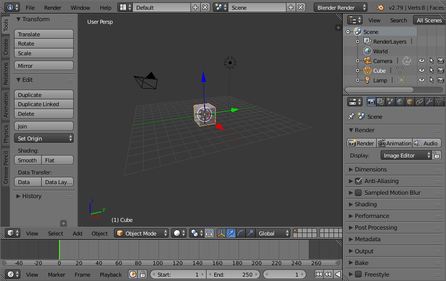

Домашнее задание: Выписать минусы и плюсы работы в Blender
Но перед домашним заданием, я бы хотел рассказать, что такое Blender и как он появился.
2 января 1998.
2 января 1998 года впервые выпустили блендер.
Его дизайн выглядел примерно так:
В 1988 году Тон Розендаль (Ton Roosendaal) основал голландскую
анимационную студию NeoGeo. NeoGeo быстро стала крупнейшей студией 3D
анимации в Нидерландах и одним из лидирующих
анимационных домов в Европе.
После тщательного изучения вопроса Тон
решил, что имеющийся в распоряжении у NeoGeo
набор 3D инструментов порядком устарел
и слишком громоздок для дальнейшей поддержки
и модернизации, и его необходимо переписать
с нуля. В 1995 году этот процесс начался,
а его результатом стал пакет 3D моделирования,
хорошо известный нам как Blender.
В 1998 году Тон решает основать новую компанию Not a Number (NaN), как дочернюю компанию NeoGeo, для дальнейшего продвижения и разработки Blender’a. В сердце NaN жило желание разрабатывать и распространять компактный, кросс-платформенный пакет 3D моделирования бесплатно.
На крыльях успешного SIGGRAPH в начале 2000 года, NaN обеспечила себе финансирование от венчурного капитала в размере €4,5млн. Такое серьёзное денежное вливание позволило NaN резко расширить свои операции. И вскоре NaN насчитывала более пятидесяти сотрудников по всему миру, работающих над улучшением и продвижением Blender’a. Летом 2000 года был выпущен Blender версии 2.0. В этой версии в 3D пакет был добавлен интегрированный игровой движок. И на конец 2000 года число пользователей, зарегистрировавшихся на вебсайте NaN, перевалило за 250 000.
Об Blender подробно рассказано в этом видео,
посмотрите его, если хотите научится пользоваться
Блендером.
Рассказывать историю можно ещё очень долго, поэтому, я думаю, что можно переходить к домашнему заданию.
Плюсы и минусы Blender.
Ну наконец-то, мы дошли до плюсов и минусов приложения Blender
И хочу начать я пожалуй с плюсов.
| Плюсы | Функциональность. | Универсальность. |
| Минусы | Инструменты могут быть не такими мощными, как того требует рабочий процесс |
Частые обновления. Регулярная доработка и изменения, несомненно, повышают актуальность программы. |
Спасибо всем, кто послушал, на этом можно заканчивать!
Ссылка на оффициальный сайт Blender: Кликни